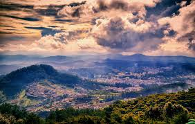

A chain of misty hills spread across a lush green carpet – with plenty to see, enjoy and experience. Ooty is much more than a visitor’s paradise. It lends a piece of itself to its guests that they will be thrilled to take back. One of the most beautiful hill stations in India, Ooty nestles in the Nilgiri district of Tamil Nadu. An erstwhile summer resort of the British Raj in India, Ooty has transformed over the years into one of the most sought-after tourism destinations in Tamil Nadu.
With a cool and soothing climate almost all year round, Ooty welcomes tourists from far and wide. It’s not just about the mountains and hills, Ooty offers much more to discerning travellers who drive up the winding roads to reach the pinnacle. Lakes, gardens, parks, peaks, waterfalls and simply amazing accommodation options. No wonder Ooty is called the 'Switzerland of India', of such grandeur is the scenic beauty the destination is so well acclaimed for. If you would love to relax over a cup of tea, sitting back and gazing at the vastness of nature, Ooty is indeed the place to be. Besides that, the Nilgiri biosphere is rich in flora and fauna, allowing you to escape into the depths of mystic jungles and explore once-in-a-lifetime experiences.
Also, you just can’t afford to miss the Toy Train ride from Mettupalayam to Ooty, which is the only daily operational meter-gauge, rack railway in India, providing you with mesmerising views of the Nilgiris.